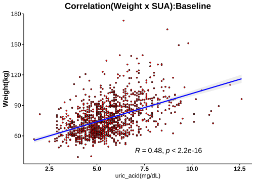
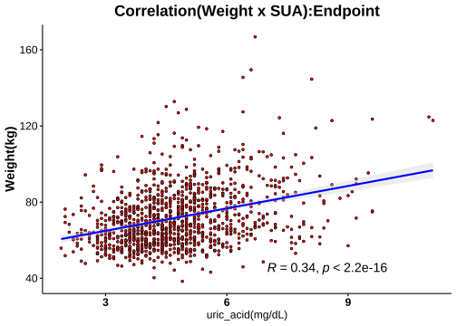
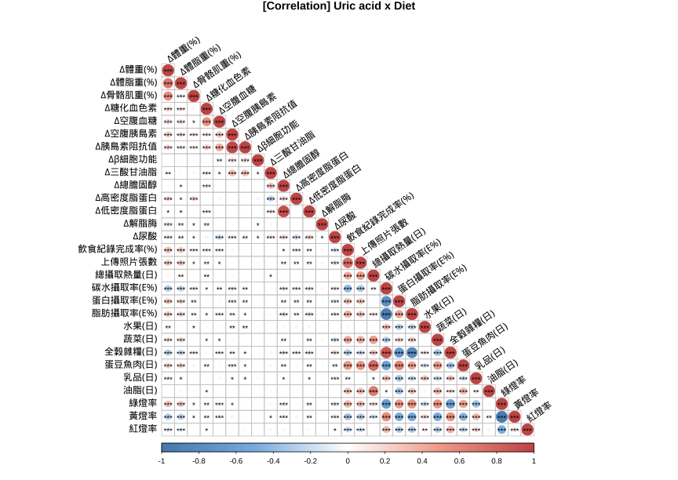

1.8 分層分析-3: 尿酸(Serum Uric Acid)
1.8.1 相關分析(Correlation Analysis)



1.8.2 Cutoff-1 (♂7.6/♀6.6)
| No change | Decrease | Increase | Normal>High | High>Normal | High>High | Sum | |
|---|---|---|---|---|---|---|---|
| female | 107 | 608 | 141 | 33 | 100 | 31 | 1020 |
| male | 19 | 90 | 19 | 7 | 52 | 20 | 207 |
| Sum | 126 | 698 | 160 | 40 | 152 | 51 | 1227 |
|
Cutoffs: Male: 7.6 (mg/dL) Female: 6.6(mg/dL) |


成效(Effectiveness)


成效(%)-Blood

| No change | Decrease | Increase | Normal>High | High>Normal | High>High | No change | Decrease | Increase | Normal>High | High>Normal | High>High | |
|---|---|---|---|---|---|---|---|---|---|---|---|---|
| 體重(T0) | 71.37 ± 1.24 | 72.17 ± 0.53 | 70.66 ± 1.09 | 73.75 ± 2.14 | 82.42 ± 1.39 | 88.29 ± 3.65 | 95.79 ± 5.62 | 93.8 ± 1.58 | 84.99 ± 3.3 | 96.2 ± 9.37 | 97.42 ± 2.1 | 101.22 ± 4.96 |
| BMI(T0) | 27.87 ± 0.44 | 27.94 ± 0.19 | 27.35 ± 0.37 | 28.68 ± 0.66 | 31.5 ± 0.5 | 33.96 ± 1.2 | 32.38 ± 1.99 | 30.99 ± 0.46 | 28.08 ± 0.95 | 31.9 ± 2.71 | 32.38 ± 0.56 | 33.28 ± 1.55 |
| 體脂重(T0) | 29.07 ± 0.84 | 28.85 ± 0.38 | 27.92 ± 0.74 | 31.47 ± 1.53 | 36.04 ± 0.99 | 40.62 ± 2.44 | 34.12 ± 4.1 | 30.83 ± 1.01 | 25.64 ± 2.05 | 34.14 ± 5.9 | 34.24 ± 1.49 | 36.94 ± 3.75 |
| 體脂率(T0) | 40.04 ± 0.59 | 39.2 ± 0.25 | 38.76 ± 0.54 | 42.02 ± 0.88 | 43.09 ± 0.56 | 45.14 ± 1.08 | 33.88 ± 1.84 | 32.3 ± 0.59 | 29.61 ± 1.5 | 34.31 ± 2.65 | 34.47 ± 0.83 | 34.99 ± 1.88 |
| 骨骼肌質量指數(T0) | 6.69 ± 0.07 | 6.85 ± 0.03 | 6.74 ± 0.07 | 6.78 ± 0.1 | 7.34 ± 0.08 | 7.57 ± 0.19 | 8.73 ± 0.25 | 8.87 ± 0.08 | 8.37 ± 0.19 | 8.79 ± 0.47 | 8.89 ± 0.09 | 8.91 ± 0.18 |
| 骨骼肌率(T0) | 32.53 ± 0.31 | 33.11 ± 0.14 | 33.2 ± 0.29 | 31.56 ± 0.46 | 31.21 ± 0.3 | 30.15 ± 0.59 | 37.21 ± 1 | 38.32 ± 0.35 | 39.54 ± 0.88 | 36.81 ± 1.43 | 37.06 ± 0.48 | 36.8 ± 1.05 |
| 內臟脂肪面積(T0) | 142.66 ± 4.73 | 142.26 ± 1.83 | 139.36 ± 3.86 | 156.78 ± 7.56 | 177.01 ± 4.16 | 198.72 ± 7.7 | 139.83 ± 12.93 | 134.12 ± 5.14 | 106.05 ± 9.38 | 129.9 ± 15.55 | 144.35 ± 6.25 | 137.98 ± 13.76 |
| 腰圍(T0) | 92 ± 1.08 | 92.23 ± 0.46 | 90.63 ± 0.93 | 95.21 ± 2.12 | 101.66 ± 1.13 | 106 ± 2.49 | 106.93 ± 4.05 | 105.31 ± 1.28 | 96.37 ± 2.78 | 106.49 ± 6.77 | 110.36 ± 1.98 | 111.31 ± 4.1 |
| 除脂體重(T0) | 42.3 ± 0.55 | 43.32 ± 0.22 | 42.74 ± 0.49 | 42.29 ± 0.76 | 46.38 ± 0.56 | 47.67 ± 1.44 | 61.67 ± 1.76 | 62.97 ± 0.8 | 59.35 ± 1.83 | 62.06 ± 4.25 | 63.17 ± 0.91 | 64.28 ± 1.69 |
| 基礎代謝率(T0) | 1283.74 ± 11.84 | 1305.64 ± 4.68 | 1293.23 ± 10.63 | 1283.48 ± 16.47 | 1371.88 ± 12.12 | 1399.61 ± 31.22 | 1702.26 ± 38.11 | 1730.12 ± 17.34 | 1651.95 ± 39.55 | 1710.57 ± 91.82 | 1734.5 ± 19.58 | 1758.5 ± 36.51 |
| 糖化血色素(T0) | 5.49 ± 0.03 | 5.48 ± 0.02 | 5.49 ± 0.05 | 5.5 ± 0.08 | 5.72 ± 0.05 | 6.1 ± 0.28 | 6.05 ± 0.23 | 5.62 ± 0.05 | 6.09 ± 0.26 | 5.7 ± 0.26 | 5.65 ± 0.05 | 5.82 ± 0.2 |
| 空腹血糖(T0) | 86.8 ± 2.53 | 85.63 ± 0.42 | 85.18 ± 1.29 | 85.91 ± 2.01 | 87.91 ± 1.44 | 96.48 ± 7.47 | 97.42 ± 6.36 | 88.86 ± 1.17 | 98.95 ± 8.03 | 92.29 ± 6.19 | 86.77 ± 1.37 | 88.75 ± 3.42 |
| 空腹胰島素(T0) | 11.37 ± 0.69 | 11.33 ± 0.32 | 9.6 ± 0.45 | 14.25 ± 1.85 | 17.2 ± 1.14 | 22.32 ± 4.04 | 19.21 ± 2.84 | 15.83 ± 1.1 | 16.66 ± 2.04 | 17.23 ± 5.73 | 19.56 ± 1.76 | 19.08 ± 2.55 |
| 胰島素阻抗值(T0) | 2.42 ± 0.16 | 2.52 ± 0.09 | 2.04 ± 0.1 | 3.08 ± 0.41 | 3.83 ± 0.27 | 5.19 ± 0.95 | 4.54 ± 0.65 | 3.53 ± 0.25 | 4.29 ± 0.85 | 4.41 ± 1.9 | 4.32 ± 0.46 | 4.36 ± 0.66 |
| β細胞功能(T0) | 197.72 ± 14.36 | 194.95 ± 11.44 | 166.6 ± 24.5 | 243.46 ± 32.74 | 308.06 ± 35.74 | 342.98 ± 54.54 | 265.72 ± 50.3 | 240.07 ± 22.57 | 223.36 ± 25.75 | 200.69 ± 35.62 | 332.7 ± 36.36 | 317.36 ± 39.45 |
| 三酸甘油脂(T0) | 102.01 ± 4.59 | 105.81 ± 2.26 | 92.72 ± 3.81 | 96.7 ± 8.09 | 150.5 ± 7.87 | 168.26 ± 30.67 | 133.84 ± 16 | 139.01 ± 8.77 | 160.74 ± 20.69 | 107.43 ± 13.2 | 181.08 ± 15.17 | 172.8 ± 23.15 |
| 總膽固醇(T0) | 198.13 ± 3.5 | 196.49 ± 1.5 | 195.39 ± 3.07 | 199.97 ± 7.44 | 202.6 ± 4.38 | 197.35 ± 5.71 | 181.42 ± 8.21 | 196.37 ± 3.64 | 191.26 ± 7.69 | 198.14 ± 10.95 | 203.75 ± 5.38 | 209.8 ± 11.93 |
| 高密度脂蛋白(T0) | 57.67 ± 1.33 | 57.14 ± 0.53 | 59.2 ± 1.16 | 56.07 ± 2.48 | 50.45 ± 1.07 | 46.59 ± 2.08 | 42.79 ± 1.67 | 46.51 ± 0.77 | 46.16 ± 2.21 | 46.36 ± 2.35 | 44.21 ± 1.73 | 44.6 ± 3.1 |
| 低密度脂蛋白(T0) | 121.94 ± 3.01 | 122.48 ± 1.3 | 119.77 ± 2.59 | 129.88 ± 6.5 | 130.98 ± 3.83 | 126.35 ± 6.04 | 123.47 ± 7.35 | 129.7 ± 3.17 | 123.74 ± 6.92 | 136.29 ± 10.8 | 134.37 ± 4.95 | 139.05 ± 10.46 |
| 尿酸(T0) | 4.76 ± 0.08 | 5.1 ± 0.03 | 4.32 ± 0.07 | 5.51 ± 0.12 | 7.33 ± 0.08 | 7.74 ± 0.18 | 5.65 ± 0.28 | 6.26 ± 0.1 | 5.25 ± 0.24 | 6.81 ± 0.27 | 8.43 ± 0.1 | 9.18 ± 0.29 |
| 澱粉脢(T0) | 44.15 ± 1.21 | 45.65 ± 0.61 | 47.33 ± 1.53 | 47.39 ± 2.58 | 41.8 ± 1.39 | 36.19 ± 1.59 | 41.05 ± 2.67 | 44.21 ± 2.05 | 46.16 ± 3.03 | 38.71 ± 3.04 | 39.02 ± 1.36 | 39.95 ± 3.24 |
| 解脂脢(T0) | 24 ± 1.01 | 24.32 ± 0.57 | 25.12 ± 1.66 | 26.03 ± 2.64 | 25.75 ± 1.52 | 28 ± 2.58 | 26.63 ± 3.28 | 27.79 ± 3.1 | 27.89 ± 4.15 | 21.43 ± 3.06 | 24.8 ± 1.8 | 24 ± 3.51 |
| 體重(T1) | 66.57 ± 1.19 | 67.78 ± 0.5 | 65.58 ± 1.03 | 67.18 ± 1.93 | 77 ± 1.36 | 82.21 ± 3.32 | 89.65 ± 5.56 | 87.22 ± 1.53 | 79.74 ± 3.05 | 86.49 ± 8.31 | 91.19 ± 2.1 | 93.5 ± 5.01 |
| BMI(T1) | 25.79 ± 0.41 | 26.24 ± 0.18 | 25.37 ± 0.34 | 26.12 ± 0.58 | 29.42 ± 0.49 | 31.63 ± 1.11 | 30.32 ± 1.97 | 28.82 ± 0.45 | 26.36 ± 0.9 | 28.68 ± 2.39 | 30.29 ± 0.56 | 30.75 ± 1.58 |
| 體脂重(T1) | 25.49 ± 0.81 | 25.84 ± 0.36 | 24.46 ± 0.7 | 27.32 ± 1.45 | 32.32 ± 0.99 | 36.6 ± 2.28 | 29.74 ± 4.09 | 26.09 ± 0.98 | 21.83 ± 2.07 | 26.77 ± 5.08 | 29.78 ± 1.54 | 30.7 ± 3.8 |
| 體脂率(T1) | 37.45 ± 0.63 | 37.26 ± 0.27 | 36.5 ± 0.55 | 39.92 ± 1.05 | 41.18 ± 0.63 | 43.56 ± 1.13 | 31.13 ± 2.13 | 29.22 ± 0.65 | 26.64 ± 1.7 | 29.54 ± 2.89 | 31.77 ± 0.96 | 30.93 ± 2.16 |
| 骨骼肌質量指數(T1) | 6.45 ± 0.07 | 6.62 ± 0.03 | 6.49 ± 0.06 | 6.38 ± 0.09 | 7.04 ± 0.07 | 7.29 ± 0.18 | 8.55 ± 0.28 | 8.57 ± 0.08 | 8.17 ± 0.16 | 8.46 ± 0.41 | 8.61 ± 0.08 | 8.7 ± 0.19 |
| 骨骼肌率(T1) | 33.81 ± 0.33 | 34.02 ± 0.14 | 34.28 ± 0.3 | 32.44 ± 0.55 | 32.14 ± 0.33 | 30.88 ± 0.6 | 38.65 ± 1.17 | 39.92 ± 0.38 | 41.08 ± 1.01 | 39.44 ± 1.57 | 38.51 ± 0.55 | 38.87 ± 1.2 |
| 內臟脂肪面積(T1) | 124.72 ± 4.6 | 126.36 ± 1.84 | 120.47 ± 3.7 | 137.62 ± 7.4 | 160.02 ± 4.49 | 174.41 ± 8.92 | 118.96 ± 12.5 | 111.1 ± 4.88 | 93.4 ± 8.82 | 114.14 ± 22.11 | 124.59 ± 6.61 | 106.13 ± 13.02 |
| 腰圍(T1) | 87.48 ± 1.09 | 87.82 ± 0.45 | 85.51 ± 0.89 | 88.78 ± 1.94 | 96.76 ± 1.18 | 100.44 ± 2.42 | 99.61 ± 3.86 | 98.55 ± 1.3 | 90.62 ± 2.9 | 97.11 ± 6.33 | 104.24 ± 2.08 | 102.83 ± 4.33 |
| 除脂體重(T1) | 41.09 ± 0.51 | 41.94 ± 0.21 | 41.12 ± 0.47 | 39.87 ± 0.68 | 44.68 ± 0.53 | 45.61 ± 1.27 | 59.92 ± 1.79 | 61.13 ± 0.78 | 57.91 ± 1.61 | 59.71 ± 3.88 | 61.41 ± 0.86 | 62.8 ± 1.71 |
| 基礎代謝率(T1) | 1257.5 ± 11.06 | 1275.84 ± 4.47 | 1258.23 ± 10.15 | 1231.09 ± 14.77 | 1335.03 ± 11.56 | 1355.16 ± 27.31 | 1664.26 ± 38.74 | 1690.41 ± 16.91 | 1620.74 ± 34.87 | 1659.86 ± 83.65 | 1696.42 ± 18.56 | 1726.15 ± 37.07 |
| 糖化血色素(T1) | 5.26 ± 0.04 | 5.23 ± 0.01 | 5.17 ± 0.03 | 5.16 ± 0.05 | 5.37 ± 0.04 | 5.51 ± 0.13 | 5.59 ± 0.11 | 5.31 ± 0.04 | 5.51 ± 0.13 | 5.16 ± 0.12 | 5.33 ± 0.05 | 5.33 ± 0.08 |
| 空腹血糖(T1) | 78.72 ± 1.56 | 78.58 ± 0.32 | 73.7 ± 1.05 | 68.55 ± 1.36 | 80.24 ± 0.88 | 77.16 ± 2.62 | 81.89 ± 2.57 | 79.87 ± 0.83 | 78.95 ± 3.23 | 67.29 ± 3.77 | 78.65 ± 1.17 | 76.8 ± 2.29 |
| 空腹胰島素(T1) | 8.93 ± 0.7 | 9.42 ± 0.29 | 6.84 ± 0.44 | 8.59 ± 1.21 | 13.69 ± 0.9 | 17.38 ± 2.56 | 14.32 ± 2.35 | 11.1 ± 0.85 | 13.31 ± 4.39 | 6.63 ± 2.05 | 16.32 ± 2.16 | 12.49 ± 2.24 |
| 胰島素阻抗值(T1) | 1.79 ± 0.16 | 1.87 ± 0.06 | 1.3 ± 0.1 | 1.52 ± 0.23 | 2.79 ± 0.2 | 3.53 ± 0.57 | 2.94 ± 0.48 | 2.23 ± 0.18 | 3.01 ± 1.21 | 1.17 ± 0.41 | 3.33 ± 0.53 | 2.42 ± 0.45 |
| β細胞功能(T1) | 298.79 ± 45.82 | 247.64 ± 13.55 | 202.52 ± 46.23 | 659.69 ± 232.57 | 365.67 ± 50.93 | 582.66 ± 174.55 | 389.79 ± 127.25 | 261.59 ± 44.53 | 298.65 ± 52.37 | 1035.61 ± 625.53 | 416.02 ± 60.4 | 418.65 ± 73.36 |
| 三酸甘油脂(T1) | 93.98 ± 3.93 | 91.68 ± 2.12 | 90.53 ± 2.57 | 104.55 ± 5.15 | 115.25 ± 5.17 | 118.52 ± 6.94 | 129.16 ± 19.39 | 108.28 ± 5.01 | 138.79 ± 12.08 | 124.14 ± 15.91 | 158.65 ± 19.01 | 133.95 ± 13.26 |
| 總膽固醇(T1) | 206.32 ± 4.6 | 197.79 ± 1.73 | 206.5 ± 4.16 | 208.73 ± 9.71 | 192.96 ± 3.92 | 184.13 ± 6.13 | 184.58 ± 13.43 | 192.84 ± 4.78 | 204.53 ± 10.88 | 205.14 ± 14.93 | 194.13 ± 6.08 | 210.35 ± 12.96 |
| 高密度脂蛋白(T1) | 52.16 ± 1.27 | 52.21 ± 0.48 | 51.46 ± 1.02 | 43.48 ± 1.8 | 47.03 ± 0.89 | 42.16 ± 2.13 | 40.48 ± 1.89 | 43.62 ± 0.81 | 43.16 ± 2.54 | 38.77 ± 3.68 | 42.21 ± 1.7 | 39.74 ± 2.6 |
| 低密度脂蛋白(T1) | 133.42 ± 3.81 | 127.39 ± 1.46 | 133.83 ± 3.32 | 142.79 ± 8.44 | 126.02 ± 3.49 | 121.39 ± 6.06 | 124.37 ± 10.39 | 129.12 ± 3.92 | 136.05 ± 10.45 | 143.71 ± 13.18 | 128.6 ± 5.51 | 144.6 ± 10.43 |
| 尿酸(T1) | 4.76 ± 0.09 | 4 ± 0.03 | 5.13 ± 0.07 | 7.41 ± 0.12 | 5.07 ± 0.09 | 7.34 ± 0.14 | 5.64 ± 0.28 | 4.81 ± 0.08 | 6.25 ± 0.25 | 8.59 ± 0.29 | 5.97 ± 0.17 | 8.65 ± 0.22 |
| 澱粉脢(T1) | 45.5 ± 1.37 | 48.23 ± 0.69 | 46.42 ± 1.47 | 44.45 ± 2.58 | 45.99 ± 1.63 | 39.52 ± 1.98 | 45.47 ± 5.22 | 44.71 ± 2.05 | 48.47 ± 4.26 | 37.43 ± 4.33 | 41.5 ± 1.44 | 41.65 ± 3.29 |
| 解脂脢(T1) | 35.44 ± 1.64 | 37.8 ± 1.21 | 33.8 ± 1.49 | 41 ± 4.36 | 40.32 ± 2.62 | 38.87 ± 3.04 | 42.11 ± 13.7 | 40.69 ± 3.91 | 35.89 ± 4.62 | 34.57 ± 6.63 | 37.5 ± 2.43 | 32.6 ± 3.96 |
| 年齡 | 39.79 ± 1.15 | 39.22 ± 0.4 | 38.61 ± 0.73 | 37.73 ± 1.86 | 40.71 ± 1.33 | 37.84 ± 1.96 | 41 ± 2.9 | 40.57 ± 1.16 | 41.84 ± 2.72 | 35.71 ± 2.57 | 38.46 ± 1.6 | 34.7 ± 2.39 |
| 飲食紀錄完成率(%) | 67.8 ± 2.94 | 61.91 ± 1.2 | 74.39 ± 2.13 | 74.21 ± 4.31 | 60.04 ± 3.01 | 77.48 ± 4.62 | 57.62 ± 8.15 | 62.45 ± 2.99 | 59.47 ± 7.94 | 78.7 ± 9.4 | 58.17 ± 4.75 | 63.2 ± 6.48 |
| 紀錄數量 | 172.94 ± 12.74 | 159.1 ± 5.04 | 210.71 ± 14.47 | 214.03 ± 34.01 | 142.2 ± 11.26 | 192.39 ± 21.25 | 118.26 ± 27.08 | 159.77 ± 14.31 | 174.05 ± 44.31 | 183 ± 57.14 | 143.62 ± 24.3 | 156.1 ± 39.63 |
| 上傳照片張數 | 150.33 ± 9.94 | 134.6 ± 4.15 | 173.7 ± 8.97 | 158.52 ± 14.73 | 119.83 ± 9.54 | 174.19 ± 20.86 | 106.79 ± 18.52 | 139.12 ± 12.12 | 163.32 ± 30.65 | 263.29 ± 72.7 | 128 ± 16.47 | 155.15 ± 38.67 |
| 碳水攝取率(E%) | 18.5 ± 0.69 | 20.05 ± 0.27 | 16.82 ± 0.45 | 15.82 ± 0.89 | 19.4 ± 0.66 | 15.81 ± 1.14 | 20.4 ± 2.33 | 18.55 ± 0.68 | 19.19 ± 1.75 | 12.56 ± 1.49 | 19.88 ± 1.12 | 14.89 ± 1 |
| 蛋白攝取率(E%) | 27.77 ± 0.27 | 27.07 ± 0.12 | 27.87 ± 0.22 | 28.06 ± 0.36 | 27.12 ± 0.26 | 28.32 ± 0.56 | 27.39 ± 0.9 | 27.56 ± 0.3 | 26.81 ± 0.66 | 29.92 ± 0.64 | 27.01 ± 0.44 | 28.48 ± 0.66 |
| 脂肪攝取率(E%) | 53.73 ± 0.51 | 52.89 ± 0.2 | 55.31 ± 0.34 | 56.12 ± 0.74 | 53.47 ± 0.49 | 55.86 ± 0.83 | 52.21 ± 1.62 | 53.89 ± 0.51 | 54 ± 1.18 | 57.52 ± 1.71 | 53.11 ± 0.82 | 56.63 ± 0.73 |
| 總攝取熱量(日) | 986.6 ± 15.81 | 988.63 ± 6.48 | 1005.4 ± 13.45 | 980.97 ± 23.26 | 1006.52 ± 18.03 | 1007.86 ± 27.78 | 1089.13 ± 53.52 | 1112.3 ± 22.55 | 1070.45 ± 44.37 | 1154.15 ± 120.78 | 1079.63 ± 32.9 | 1160.98 ± 38.43 |
| 綠燈率 | 85.17 ± 1.35 | 80.18 ± 0.65 | 85.51 ± 1.24 | 89.83 ± 1.54 | 81.61 ± 1.45 | 86.95 ± 2.71 | 76.79 ± 5.35 | 82.49 ± 1.6 | 83.91 ± 3.65 | 88.96 ± 2.56 | 78.45 ± 2.83 | 86.64 ± 2.71 |
| 黃燈率 | 13.09 ± 1.18 | 17.17 ± 0.58 | 12.96 ± 1.12 | 8.61 ± 1.27 | 14.73 ± 1.23 | 11.56 ± 2.46 | 20.91 ± 4.63 | 15.63 ± 1.41 | 15.04 ± 3.41 | 11.01 ± 2.57 | 17.96 ± 2.47 | 12.04 ± 2.51 |
| 紅燈率 | 1.74 ± 0.35 | 2.65 ± 0.21 | 1.53 ± 0.28 | 1.56 ± 0.53 | 3.65 ± 0.8 | 1.49 ± 0.46 | 2.31 ± 1.1 | 1.89 ± 0.46 | 1.05 ± 0.41 | 0.03 ± 0.03 | 3.59 ± 1.03 | 1.31 ± 0.6 |
| 水果(日) | 0.1 ± 0.02 | 0.09 ± 0.01 | 0.08 ± 0.01 | 0.06 ± 0.02 | 0.09 ± 0.02 | 0.04 ± 0.01 | 0.03 ± 0.01 | 0.04 ± 0.01 | 0.08 ± 0.06 | 0.12 ± 0.1 | 0.08 ± 0.02 | 0.03 ± 0.01 |
| 蔬菜(日) | 3.37 ± 0.11 | 3.2 ± 0.04 | 3.66 ± 0.09 | 3.64 ± 0.18 | 3.35 ± 0.12 | 3.55 ± 0.17 | 3.14 ± 0.28 | 3.22 ± 0.13 | 3.78 ± 0.35 | 3.85 ± 0.49 | 3.17 ± 0.17 | 3.68 ± 0.24 |
| 全穀雜糧(日) | 1.75 ± 0.11 | 2.09 ± 0.05 | 1.46 ± 0.08 | 1.27 ± 0.13 | 2 ± 0.12 | 1.36 ± 0.17 | 2.37 ± 0.34 | 2.32 ± 0.15 | 2.04 ± 0.32 | 0.88 ± 0.15 | 2.32 ± 0.21 | 1.63 ± 0.26 |
| 蛋豆魚肉(日) | 8.74 ± 0.18 | 8.39 ± 0.07 | 9.04 ± 0.16 | 8.9 ± 0.25 | 8.61 ± 0.18 | 9.31 ± 0.39 | 9.62 ± 0.79 | 9.76 ± 0.23 | 9.07 ± 0.53 | 11.5 ± 1.33 | 9.28 ± 0.39 | 10.7 ± 0.37 |
| 乳品(日) | 0.05 ± 0.01 | 0.08 ± 0 | 0.05 ± 0.01 | 0.03 ± 0.01 | 0.07 ± 0.01 | 0.03 ± 0.01 | 0.06 ± 0.03 | 0.04 ± 0.01 | 0.05 ± 0.02 | 0.04 ± 0.01 | 0.07 ± 0.02 | 0.04 ± 0.01 |
| 油脂(日) | 3.74 ± 0.11 | 3.87 ± 0.04 | 4 ± 0.07 | 3.87 ± 0.12 | 3.87 ± 0.1 | 3.95 ± 0.17 | 3.97 ± 0.29 | 4.31 ± 0.14 | 4.16 ± 0.24 | 4.06 ± 0.47 | 4.03 ± 0.16 | 4.27 ± 0.27 |
| ∆體重 | 4.8 ± 0.22 | 4.38 ± 0.09 | 5.08 ± 0.21 | 6.57 ± 0.47 | 5.43 ± 0.24 | 6.08 ± 0.55 | 6.14 ± 0.71 | 6.58 ± 0.31 | 5.25 ± 0.89 | 9.71 ± 1.33 | 6.23 ± 0.4 | 7.71 ± 0.62 |
| ∆BMI | 2.09 ± 0.22 | 1.7 ± 0.03 | 1.98 ± 0.08 | 2.55 ± 0.18 | 2.07 ± 0.09 | 2.33 ± 0.2 | 2.06 ± 0.24 | 2.17 ± 0.1 | 1.72 ± 0.29 | 3.22 ± 0.42 | 2.09 ± 0.13 | 2.53 ± 0.2 |
| ∆體脂重 | 3.59 ± 0.17 | 3.01 ± 0.07 | 3.46 ± 0.18 | 4.15 ± 0.32 | 3.72 ± 0.18 | 4.02 ± 0.36 | 4.38 ± 0.46 | 4.74 ± 0.24 | 3.81 ± 0.48 | 7.37 ± 0.92 | 4.46 ± 0.33 | 6.23 ± 0.51 |
| ∆體脂率 | 2.59 ± 0.22 | 1.93 ± 0.07 | 2.27 ± 0.18 | 2.09 ± 0.34 | 1.91 ± 0.16 | 1.57 ± 0.26 | 2.75 ± 0.42 | 3.08 ± 0.23 | 2.97 ± 0.39 | 4.77 ± 0.62 | 2.69 ± 0.27 | 4.07 ± 0.49 |
| ∆骨骼肌質量指數 | 0.24 ± 0.02 | 0.23 ± 0.01 | 0.25 ± 0.02 | 0.4 ± 0.05 | 0.3 ± 0.02 | 0.28 ± 0.04 | 0.18 ± 0.06 | 0.29 ± 0.03 | 0.21 ± 0.07 | 0.33 ± 0.08 | 0.28 ± 0.03 | 0.21 ± 0.06 |
| ∆骨骼肌重 | 0.74 ± 0.09 | 0.85 ± 0.03 | 0.98 ± 0.07 | 1.5 ± 0.18 | 1.02 ± 0.08 | 1.24 ± 0.17 | 1.09 ± 0.25 | 1.15 ± 0.13 | 0.92 ± 0.29 | 1.37 ± 0.39 | 1.07 ± 0.14 | 1.04 ± 0.27 |
| ∆內臟脂肪面積 | 17.08 ± 0.85 | 15.7 ± 0.39 | 18.65 ± 0.87 | 18.47 ± 1.85 | 17.17 ± 1.05 | 17.7 ± 1.86 | 20.99 ± 2.91 | 22.52 ± 1.26 | 15.72 ± 1.75 | 34.18 ± 3.58 | 22.48 ± 1.59 | 27.88 ± 2.77 |
| ∆腰圍 | 4.52 ± 0.28 | 4.41 ± 0.11 | 5.12 ± 0.24 | 6.43 ± 0.68 | 4.9 ± 0.31 | 5.55 ± 0.63 | 7.33 ± 0.91 | 6.76 ± 0.36 | 5.76 ± 0.74 | 9.37 ± 0.79 | 6.12 ± 0.47 | 8.48 ± 0.98 |
| ∆除脂體重 | 1.21 ± 0.17 | 1.38 ± 0.06 | 1.62 ± 0.12 | 2.42 ± 0.31 | 1.7 ± 0.13 | 2.05 ± 0.3 | 1.75 ± 0.42 | 1.84 ± 0.22 | 1.45 ± 0.49 | 2.34 ± 0.56 | 1.77 ± 0.23 | 1.49 ± 0.44 |
| ∆基礎代謝率 | -26.23 ± 3.56 | -29.8 ± 1.22 | -35 ± 2.67 | -52.39 ± 6.61 | -36.85 ± 2.84 | -44.45 ± 6.47 | -38 ± 9.12 | -39.71 ± 4.76 | -31.21 ± 10.49 | -50.71 ± 12.07 | -38.08 ± 4.9 | -32.35 ± 9.48 |
| ∆糖化血色素 | 0.23 ± 0.02 | 0.25 ± 0.01 | 0.32 ± 0.03 | 0.33 ± 0.05 | 0.35 ± 0.03 | 0.59 ± 0.17 | 0.46 ± 0.15 | 0.31 ± 0.03 | 0.58 ± 0.15 | 0.54 ± 0.23 | 0.32 ± 0.02 | 0.48 ± 0.17 |
| ∆空腹血糖 | 8.08 ± 1.47 | 7.05 ± 0.41 | 11.48 ± 1.02 | 17.36 ± 2.36 | 7.67 ± 1.34 | 19.32 ± 7.39 | 15.53 ± 5.57 | 8.99 ± 1.27 | 20 ± 7.37 | 25 ± 4.62 | 8.12 ± 1.16 | 11.95 ± 3.33 |
| ∆空腹胰島素 | 2.44 ± 0.69 | 1.93 ± 0.28 | 2.76 ± 0.41 | 5.79 ± 1.54 | 3.52 ± 1.03 | 4.94 ± 3.61 | 4.89 ± 2.02 | 4.72 ± 1.01 | 2.48 ± 3.28 | 10.61 ± 4.04 | 3.23 ± 1.5 | 6.59 ± 2.51 |
| ∆胰島素阻抗值 | 0.64 ± 0.16 | 0.65 ± 0.09 | 0.74 ± 0.09 | 1.58 ± 0.34 | 1.03 ± 0.25 | 1.65 ± 0.86 | 1.6 ± 0.48 | 1.3 ± 0.24 | 1.29 ± 1.17 | 3.24 ± 1.53 | 0.99 ± 0.32 | 1.94 ± 0.65 |
| ∆β細胞功能 | -100.52 ± 46.43 | -52.5 ± 16.96 | -36.05 ± 51.32 | -412.2 ± 221.7 | -57.6 ± 46.36 | -239.68 ± 173.68 | -124.07 ± 104.92 | -21.22 ± 43.85 | -75.28 ± 50.83 | -834.93 ± 621.73 | -83.31 ± 55.94 | -101.3 ± 60.5 |
| ∆三酸甘油脂 | 8.03 ± 4.54 | 14.13 ± 1.92 | 2.19 ± 2.95 | -7.85 ± 7.55 | 35.25 ± 6.91 | 49.74 ± 29.06 | 4.68 ± 16.22 | 30.73 ± 6.6 | 21.95 ± 20.74 | -16.71 ± 18.49 | 22.42 ± 11.1 | 38.85 ± 15.66 |
| ∆總膽固醇 | -8.19 ± 3.17 | -1.31 ± 1.35 | -11.11 ± 3.28 | -8.76 ± 5.14 | 9.64 ± 3.55 | 13.23 ± 3.66 | -3.16 ± 9.85 | 3.52 ± 3.23 | -13.26 ± 8.47 | -7 ± 12.07 | 9.62 ± 4.43 | -0.55 ± 8.92 |
| ∆高密度脂蛋白 | 5.51 ± 0.82 | 4.94 ± 0.34 | 7.73 ± 0.74 | 12.58 ± 1.54 | 3.42 ± 0.75 | 4.43 ± 1.34 | 2.31 ± 1.18 | 2.89 ± 0.74 | 3 ± 2.53 | 7.59 ± 2.92 | 2 ± 1.02 | 4.86 ± 1.92 |
| ∆低密度脂蛋白 | -11.48 ± 2.56 | -4.9 ± 1.16 | -14.06 ± 2.79 | -12.91 ± 4.8 | 4.96 ± 3.14 | 4.97 ± 3.48 | -0.89 ± 7.89 | 0.58 ± 2.77 | -12.32 ± 7.68 | -7.43 ± 10.91 | 5.77 ± 3.83 | -5.55 ± 8.26 |
| ∆尿酸 | 0 ± 0.01 | -1.1 ± 0.02 | 0.81 ± 0.04 | 1.9 ± 0.18 | -2.26 ± 0.11 | -0.4 ± 0.25 | -0.01 ± 0.04 | -1.45 ± 0.08 | 0.99 ± 0.16 | 1.77 ± 0.36 | -2.46 ± 0.19 | -0.52 ± 0.39 |
| ∆澱粉脢 | 1.36 ± 0.88 | 2.58 ± 0.44 | -0.91 ± 0.78 | -2.94 ± 1.56 | 4.19 ± 1.1 | 3.32 ± 1.13 | 4.42 ± 4.72 | 0.5 ± 1.64 | 2.32 ± 3.48 | -1.29 ± 2.56 | 2.48 ± 1.12 | 1.7 ± 1.3 |
| ∆解脂脢 | 11.44 ± 1.42 | 13.56 ± 0.94 | 8.68 ± 1.77 | 14.97 ± 3.99 | 14.57 ± 2 | 10.87 ± 2.89 | 15.47 ± 13.89 | 12.9 ± 3.83 | 6.89 ± 6.28 | 13.14 ± 6.15 | 12.08 ± 1.74 | 8.6 ± 2.48 |
| ∆體重(%) | 6.73 ± 0.3 | 6.07 ± 0.11 | 7.16 ± 0.27 | 8.81 ± 0.53 | 6.66 ± 0.28 | 6.79 ± 0.45 | 6.57 ± 0.78 | 7.06 ± 0.32 | 6.04 ± 1 | 10.08 ± 0.78 | 6.49 ± 0.41 | 7.92 ± 0.74 |
| ∆BMI(%) | 7.28 ± 0.52 | 6.07 ± 0.12 | 7.17 ± 0.27 | 8.82 ± 0.53 | 6.66 ± 0.28 | 6.79 ± 0.45 | 6.56 ± 0.77 | 7.03 ± 0.32 | 6.04 ± 1 | 10.07 ± 0.79 | 6.5 ± 0.41 | 7.92 ± 0.74 |
| ∆體脂重(%) | 12.95 ± 0.64 | 10.82 ± 0.26 | 12.52 ± 0.65 | 13.6 ± 1.03 | 10.95 ± 0.57 | 10.13 ± 0.81 | 15.39 ± 2.14 | 16.19 ± 0.88 | 16.05 ± 2.03 | 23.18 ± 2.49 | 14.24 ± 1.14 | 19.72 ± 2.06 |
| ∆體脂率(%) | 6.68 ± 0.57 | 5.12 ± 0.21 | 5.84 ± 0.54 | 5.26 ± 0.9 | 4.66 ± 0.42 | 3.59 ± 0.62 | 9.52 ± 1.89 | 9.92 ± 0.76 | 10.83 ± 1.52 | 14.62 ± 2.44 | 8.4 ± 0.95 | 12.91 ± 1.79 |
| ∆骨骼肌質量指數(%) | 3.52 ± 0.35 | 3.31 ± 0.12 | 3.64 ± 0.27 | 5.81 ± 0.67 | 4.1 ± 0.28 | 3.64 ± 0.5 | 2.14 ± 0.7 | 3.29 ± 0.3 | 2.26 ± 0.81 | 3.58 ± 0.71 | 3.1 ± 0.31 | 2.38 ± 0.66 |
| ∆骨骼肌重(%) | 3.01 ± 0.48 | 3.51 ± 0.13 | 4.15 ± 0.29 | 6.34 ± 0.72 | 3.96 ± 0.3 | 4.52 ± 0.54 | 3.14 ± 0.72 | 3.19 ± 0.34 | 2.51 ± 0.86 | 3.67 ± 1.01 | 2.94 ± 0.39 | 2.88 ± 0.76 |
| ∆內臟脂肪面積(%) | 13.34 ± 0.78 | 11.94 ± 0.31 | 14.32 ± 0.69 | 12.46 ± 1.33 | 10.62 ± 0.7 | 9.67 ± 1.21 | 17.38 ± 2.73 | 17.99 ± 1.01 | 16.14 ± 1.97 | 27.64 ± 3.12 | 16.75 ± 1.23 | 22.82 ± 2.27 |
| ∆腰圍(%) | 4.94 ± 0.3 | 4.76 ± 0.12 | 5.61 ± 0.26 | 6.64 ± 0.66 | 4.89 ± 0.3 | 5.22 ± 0.59 | 6.84 ± 0.81 | 6.46 ± 0.36 | 6.05 ± 0.74 | 8.85 ± 0.64 | 5.66 ± 0.44 | 7.85 ± 0.91 |
| ∆除脂體重(%) | 2.66 ± 0.46 | 3.11 ± 0.13 | 3.72 ± 0.28 | 5.6 ± 0.68 | 3.62 ± 0.27 | 4.12 ± 0.51 | 2.85 ± 0.69 | 2.87 ± 0.33 | 2.19 ± 0.82 | 3.58 ± 0.78 | 2.75 ± 0.36 | 2.32 ± 0.71 |
| ∆基礎代謝率(%) | -1.95 ± 0.3 | -2.24 ± 0.09 | -2.66 ± 0.2 | -4.01 ± 0.49 | -2.65 ± 0.2 | -3.05 ± 0.39 | -2.23 ± 0.54 | -2.26 ± 0.26 | -1.75 ± 0.63 | -2.83 ± 0.63 | -2.16 ± 0.28 | -1.84 ± 0.55 |
| ∆糖化血色素(%) | 4.12 ± 0.41 | 4.31 ± 0.17 | 5.46 ± 0.45 | 5.76 ± 0.84 | 5.88 ± 0.46 | 7.88 ± 1.47 | 6.56 ± 1.63 | 5.3 ± 0.46 | 8.46 ± 1.75 | 8.78 ± 3.39 | 5.62 ± 0.41 | 7.19 ± 2.02 |
| ∆空腹血糖(%) | 8.09 ± 1.09 | 7.44 ± 0.43 | 12.71 ± 1.02 | 19.22 ± 2.11 | 7.16 ± 1.34 | 14.48 ± 3.04 | 13.12 ± 3.46 | 8.99 ± 1.34 | 15.89 ± 4.14 | 26.37 ± 3.74 | 8.86 ± 1.29 | 11.78 ± 3.29 |
| ∆空腹胰島素(%) | 6.64 ± 8.18 | 3.6 ± 2.33 | 19.73 ± 4.56 | 21.14 ± 11.53 | -2.83 ± 9.69 | 4.24 ± 13.84 | 21.04 ± 10.09 | 11.89 ± 8.75 | 22.95 ± 12.4 | 60.46 ± 7.75 | 13.41 ± 6.87 | 26.69 ± 9.9 |
| ∆胰島素阻抗值(%) | 7.13 ± 9.09 | 8.55 ± 2.42 | 27.66 ± 4.84 | 33.67 ± 10.47 | -1.05 ± 11.26 | 11.86 ± 14.56 | 27.74 ± 11.27 | 14.49 ± 10.1 | 32.41 ± 12.9 | 69.22 ± 6.75 | 20.09 ± 6.55 | 31.69 ± 10.86 |
| ∆β細胞功能(%) | -76.91 ± 32.4 | -52.84 ± 7.96 | -31.28 ± 36.78 | -132.82 ± 114.43 | -48.13 ± 17.93 | -59.68 ± 74.03 | -54.01 ± 25.17 | -27.53 ± 28.07 | -64.96 ± 26.43 | -364.05 ± 302.17 | -45 ± 18.55 | -44.93 ± 18.03 |
| ∆三酸甘油脂(%) | -4.76 ± 5.01 | 5 ± 1.5 | -8.2 ± 3.11 | -26.06 ± 10.82 | 11.32 ± 4.13 | 13.83 ± 5.49 | -6.22 ± 11.63 | 14.23 ± 3.22 | -1.09 ± 9.13 | -22.6 ± 16.8 | 10.67 ± 5.25 | 8.93 ± 7.85 |
| ∆總膽固醇(%) | -4.45 ± 1.61 | -1.47 ± 0.69 | -6.28 ± 1.68 | -4.24 ± 2.57 | 3.25 ± 1.67 | 6.61 ± 1.86 | -1.26 ± 4.73 | 1.72 ± 1.6 | -7.55 ± 4.58 | -3.84 ± 6.29 | 4.26 ± 2.09 | -1.33 ± 4.72 |
| ∆高密度脂蛋白(%) | 8.73 ± 1.34 | 7.6 ± 0.57 | 12.06 ± 1.15 | 21.18 ± 2.2 | 5.24 ± 1.48 | 8.75 ± 2.58 | 5 ± 2.87 | 5.38 ± 1.53 | 4.9 ± 5.74 | 16.47 ± 6.6 | 3.84 ± 2.06 | 8.43 ± 4.17 |
| ∆低密度脂蛋白(%) | -10.39 ± 2.11 | -6.06 ± 0.99 | -13.79 ± 2.38 | -10.43 ± 3.64 | 0.78 ± 2.45 | 3.1 ± 2.91 | -0.68 ± 5.93 | -0.71 ± 2.42 | -10.15 ± 7.05 | -6.74 ± 8.44 | 3.48 ± 2.84 | -7.85 ± 7.61 |
| ∆尿酸(%) | -0.12 ± 0.28 | -21.38 ± 0.43 | 19.95 ± 1.2 | 37.07 ± 4.42 | -30.44 ± 1.3 | -3.44 ± 3.05 | -0.08 ± 0.69 | -22.64 ± 1.11 | 20.41 ± 4.03 | 27.09 ± 6.08 | -28.75 ± 2.16 | -3.83 ± 4.17 |
| ∆澱粉脢(%) | 4.09 ± 1.95 | 6.98 ± 0.87 | -0.65 ± 1.43 | -5.06 ± 2.72 | 11.79 ± 2.46 | 9.93 ± 3.18 | 12.49 ± 10.3 | 4.14 ± 2.68 | 6.87 ± 8.63 | -3.94 ± 6.29 | 8.69 ± 3.55 | 6.13 ± 3.27 |
| ∆解脂脢(%) | 60.48 ± 7.82 | 66.16 ± 3.34 | 54.01 ± 6.71 | 74.51 ± 18.41 | 70.8 ± 7.23 | 76.87 ± 26.44 | 78.76 ± 59.49 | 80.06 ± 11.58 | 58.1 ± 29.95 | 69.52 ± 28.9 | 59.49 ± 7.42 | 60.97 ± 14.72 |
|
Significance: |
1.8.3 Cutoff-2 (5.5)
| No change | Decrease | Increase | Normal>High | High>Normal | High>High | Sum | |
|---|---|---|---|---|---|---|---|
| female | 79 | 390 | 91 | 51 | 266 | 143 | 1020 |
| male | 7 | 13 | 3 | 8 | 69 | 107 | 207 |
| Sum | 86 | 403 | 94 | 59 | 335 | 250 | 1227 |
| Cutoffs: 5.5(mg/dL) |


成效(Effectiveness)


成效(%)-Blood

| No change | Decrease | Increase | Normal>High | High>Normal | High>High | No change | Decrease | Increase | Normal>High | High>Normal | High>High | |
|---|---|---|---|---|---|---|---|---|---|---|---|---|
| 體重(T0) | 68.62 ± 1.3 | 70.32 ± 0.59 | 69.55 ± 1.45 | 72.47 ± 1.35 | 77.2 ± 0.89 | 80.31 ± 1.37 | 85.87 ± 5.66 | 87.02 ± 3.51 | 77.33 ± 0.86 | 82.46 ± 2.43 | 93.92 ± 1.87 | 98.46 ± 1.82 |
| BMI(T0) | 26.81 ± 0.44 | 27.23 ± 0.21 | 26.62 ± 0.46 | 28.42 ± 0.48 | 29.83 ± 0.33 | 31 ± 0.47 | 28.45 ± 1.55 | 29.02 ± 1.32 | 27.02 ± 1.82 | 27.12 ± 0.68 | 31.16 ± 0.55 | 32.58 ± 0.55 |
| 體脂重(T0) | 27.14 ± 0.9 | 27.35 ± 0.43 | 26.65 ± 0.97 | 30.27 ± 0.93 | 32.75 ± 0.64 | 34.97 ± 0.92 | 25.93 ± 3.42 | 26.08 ± 2.86 | 25.13 ± 6.08 | 22.69 ± 1.9 | 31.01 ± 1.15 | 35.06 ± 1.28 |
| 體脂率(T0) | 38.88 ± 0.67 | 38.2 ± 0.31 | 37.43 ± 0.68 | 41.48 ± 0.71 | 41.61 ± 0.36 | 42.78 ± 0.49 | 29.49 ± 2.53 | 29.26 ± 2.2 | 32.33 ± 7.43 | 27.3 ± 1.64 | 32.43 ± 0.63 | 34.63 ± 0.63 |
| 骨骼肌質量指數(T0) | 6.57 ± 0.07 | 6.79 ± 0.04 | 6.69 ± 0.09 | 6.77 ± 0.08 | 7.06 ± 0.05 | 7.19 ± 0.08 | 8.24 ± 0.34 | 8.65 ± 0.19 | 7.73 ± 0.47 | 8.38 ± 0.19 | 8.89 ± 0.1 | 8.89 ± 0.08 |
| 骨骼肌率(T0) | 33.1 ± 0.35 | 33.62 ± 0.17 | 33.92 ± 0.36 | 31.74 ± 0.4 | 31.9 ± 0.19 | 31.29 ± 0.26 | 39.6 ± 1.47 | 39.97 ± 1.28 | 37.24 ± 4.24 | 41.03 ± 1.06 | 38.24 ± 0.37 | 36.94 ± 0.35 |
| 內臟脂肪面積(T0) | 127.69 ± 5 | 136.65 ± 2.24 | 130.78 ± 4.94 | 153.21 ± 4.99 | 158.57 ± 2.84 | 174.61 ± 3.83 | 115.53 ± 17.18 | 96.7 ± 8.06 | 118.47 ± 33.8 | 82 ± 3.58 | 135.68 ± 5.75 | 143.98 ± 4.79 |
| 腰圍(T0) | 89.65 ± 1.17 | 90.37 ± 0.53 | 89.32 ± 1.23 | 93.58 ± 1.27 | 97.12 ± 0.75 | 99.51 ± 1.1 | 99.53 ± 4.79 | 98.98 ± 3.12 | 91.1 ± 3.98 | 93.96 ± 2.02 | 105.25 ± 1.48 | 110.09 ± 1.51 |
| 除脂體重(T0) | 41.48 ± 0.56 | 42.98 ± 0.26 | 42.9 ± 0.63 | 42.2 ± 0.71 | 44.44 ± 0.34 | 45.33 ± 0.58 | 59.94 ± 3 | 60.95 ± 1.95 | 52.2 ± 5.31 | 59.77 ± 1.35 | 62.91 ± 0.92 | 63.4 ± 0.72 |
| 基礎代謝率(T0) | 1266.15 ± 12.16 | 1298.37 ± 5.56 | 1296.67 ± 13.63 | 1281.73 ± 15.39 | 1329.98 ± 7.43 | 1349.19 ± 12.43 | 1664.86 ± 64.73 | 1686.38 ± 42.13 | 1497.67 ± 114.32 | 1661 ± 29.13 | 1728.9 ± 19.9 | 1739.5 ± 15.62 |
| 糖化血色素(T0) | 5.45 ± 0.04 | 5.45 ± 0.02 | 5.5 ± 0.06 | 5.49 ± 0.09 | 5.58 ± 0.03 | 5.68 ± 0.07 | 6.5 ± 0.56 | 5.78 ± 0.19 | 5.8 ± 0.21 | 5.59 ± 0.16 | 5.58 ± 0.05 | 5.78 ± 0.07 |
| 空腹血糖(T0) | 86.94 ± 3.37 | 85.31 ± 0.52 | 84.58 ± 1.57 | 87.73 ± 2.45 | 86.7 ± 0.73 | 88.14 ± 1.81 | 108 ± 16.91 | 95.08 ± 4.41 | 84.33 ± 1.76 | 85.88 ± 2.95 | 87.75 ± 1.22 | 90.41 ± 1.77 |
| 空腹胰島素(T0) | 9.95 ± 0.65 | 10.01 ± 0.34 | 9.32 ± 0.58 | 12.01 ± 1 | 14.26 ± 0.57 | 16.8 ± 1.2 | 15.63 ± 4.71 | 13.9 ± 2.49 | 13.1 ± 4.59 | 12.3 ± 1.6 | 15.6 ± 1.31 | 19.82 ± 1.15 |
| 胰島素阻抗值(T0) | 2.11 ± 0.16 | 2.26 ± 0.12 | 1.96 ± 0.13 | 2.65 ± 0.24 | 3.12 ± 0.14 | 3.7 ± 0.28 | 4.11 ± 1.13 | 3.44 ± 0.69 | 2.73 ± 1 | 2.6 ± 0.34 | 3.44 ± 0.3 | 4.57 ± 0.32 |
| β細胞功能(T0) | 178.02 ± 14.96 | 181.72 ± 9.29 | 191.23 ± 14.76 | 142.2 ± 63.21 | 234.02 ± 25.16 | 285.26 ± 20.24 | 204.49 ± 89.75 | 159.91 ± 24.86 | 216.8 ± 71.16 | 212.81 ± 30.26 | 252.21 ± 30.44 | 305.59 ± 19.92 |
| 三酸甘油脂(T0) | 96.86 ± 5.4 | 99.19 ± 2.8 | 90.42 ± 4.96 | 98.35 ± 6.06 | 122.18 ± 3.76 | 137.76 ± 8.29 | 105.86 ± 12.93 | 117.46 ± 17.42 | 122 ± 49.22 | 171.38 ± 40.95 | 141.88 ± 10.65 | 167.64 ± 9.37 |
| 總膽固醇(T0) | 195.97 ± 4.14 | 195 ± 1.8 | 194.9 ± 3.77 | 196.84 ± 5.58 | 199.73 ± 2.46 | 201.08 ± 3.17 | 167.57 ± 14.79 | 187.46 ± 9.31 | 168 ± 27.47 | 197.25 ± 12.05 | 200.19 ± 3.96 | 200.25 ± 3.94 |
| 高密度脂蛋白(T0) | 57.36 ± 1.52 | 58.4 ± 0.69 | 59.62 ± 1.56 | 58.1 ± 1.59 | 54.06 ± 0.72 | 52.59 ± 1.11 | 45.36 ± 1.47 | 47.16 ± 1.6 | 54.5 ± 7.19 | 44.16 ± 3.78 | 47.25 ± 1.24 | 43.77 ± 0.94 |
| 低密度脂蛋白(T0) | 119.8 ± 3.49 | 119.55 ± 1.55 | 118.89 ± 3.09 | 122.41 ± 4.89 | 128.34 ± 2.15 | 128.78 ± 2.85 | 111.43 ± 14.5 | 123.23 ± 7.13 | 104.67 ± 21.73 | 127.62 ± 11.56 | 133.28 ± 3.82 | 132.51 ± 3.38 |
| 尿酸(T0) | 4.41 ± 0.08 | 4.63 ± 0.03 | 3.94 ± 0.07 | 4.78 ± 0.07 | 6.24 ± 0.05 | 6.72 ± 0.09 | 4.34 ± 0.33 | 4.63 ± 0.21 | 3.83 ± 0.33 | 4.9 ± 0.24 | 6.72 ± 0.12 | 7.81 ± 0.13 |
| 澱粉脢(T0) | 44.77 ± 1.32 | 46.45 ± 0.78 | 48.23 ± 2.09 | 45 ± 2.07 | 43.56 ± 0.88 | 42.65 ± 1.12 | 43.14 ± 4.81 | 39.15 ± 4.27 | 45.67 ± 5.9 | 49 ± 5.55 | 43.61 ± 2.23 | 40.99 ± 1.33 |
| 解脂脢(T0) | 24.65 ± 1.22 | 24.46 ± 0.73 | 27.79 ± 2.43 | 23.39 ± 1.82 | 24.28 ± 0.87 | 24.72 ± 1.03 | 23.86 ± 6.41 | 18.23 ± 3.35 | 36 ± 24.58 | 26 ± 3.98 | 29.56 ± 3.84 | 25.25 ± 1.41 |
| 體重(T1) | 64.32 ± 1.27 | 66.06 ± 0.56 | 65.05 ± 1.38 | 66.3 ± 1.27 | 72.41 ± 0.86 | 74.41 ± 1.3 | 80.76 ± 5.25 | 81.55 ± 3.31 | 75.9 ± 2.87 | 76.31 ± 1.53 | 87.17 ± 1.81 | 91.66 ± 1.8 |
| BMI(T1) | 25.09 ± 0.44 | 25.58 ± 0.21 | 24.89 ± 0.44 | 25.98 ± 0.43 | 27.98 ± 0.32 | 28.59 ± 0.44 | 26.76 ± 1.45 | 27.19 ± 1.21 | 26.58 ± 2.41 | 25.1 ± 0.4 | 28.92 ± 0.53 | 30.32 ± 0.55 |
| 體脂重(T1) | 23.83 ± 0.88 | 24.47 ± 0.41 | 23.59 ± 0.92 | 26.1 ± 0.85 | 29.4 ± 0.61 | 30.99 ± 0.89 | 21.49 ± 3.18 | 22.42 ± 2.62 | 23.37 ± 7.08 | 18.81 ± 1.72 | 26.03 ± 1.15 | 30.08 ± 1.29 |
| 體脂率(T1) | 36.29 ± 0.74 | 36.27 ± 0.33 | 35.32 ± 0.7 | 39.05 ± 0.72 | 39.7 ± 0.39 | 40.68 ± 0.54 | 25.86 ± 2.93 | 26.78 ± 2.29 | 30.27 ± 8.02 | 24.45 ± 1.88 | 29.13 ± 0.74 | 31.59 ± 0.72 |
| 骨骼肌質量指數(T1) | 6.35 ± 0.07 | 6.56 ± 0.03 | 6.48 ± 0.09 | 6.44 ± 0.08 | 6.81 ± 0.05 | 6.88 ± 0.07 | 8.17 ± 0.33 | 8.41 ± 0.18 | 7.73 ± 0.32 | 8.11 ± 0.15 | 8.59 ± 0.1 | 8.63 ± 0.08 |
| 骨骼肌率(T1) | 34.38 ± 0.39 | 34.51 ± 0.18 | 34.92 ± 0.37 | 32.85 ± 0.41 | 32.82 ± 0.21 | 32.29 ± 0.29 | 41.58 ± 1.73 | 41.2 ± 1.33 | 38.3 ± 4.62 | 42.4 ± 1.27 | 39.99 ± 0.42 | 38.54 ± 0.4 |
| 內臟脂肪面積(T1) | 111.97 ± 4.85 | 120.09 ± 2.19 | 112.46 ± 4.75 | 131.86 ± 4.88 | 142.92 ± 2.91 | 154.93 ± 4.04 | 93.91 ± 15.28 | 90.79 ± 9.44 | 106.6 ± 34.12 | 83.3 ± 9.35 | 112.01 ± 5.63 | 121.52 ± 4.97 |
| 腰圍(T1) | 85.5 ± 1.18 | 86.08 ± 0.51 | 84.67 ± 1.16 | 87.31 ± 1.24 | 92.43 ± 0.76 | 94.12 ± 1.08 | 93.06 ± 4.58 | 93.24 ± 2.79 | 86.63 ± 3.91 | 87.26 ± 1.5 | 98.2 ± 1.53 | 103.2 ± 1.56 |
| 除脂體重(T1) | 40.48 ± 0.57 | 41.59 ± 0.24 | 41.45 ± 0.61 | 40.21 ± 0.68 | 43 ± 0.33 | 43.42 ± 0.52 | 59.27 ± 3.01 | 59.12 ± 1.94 | 52.53 ± 4.6 | 57.5 ± 1.09 | 61.13 ± 0.89 | 61.57 ± 0.7 |
| 基礎代謝率(T1) | 1244.53 ± 12.22 | 1268.38 ± 5.25 | 1265.4 ± 13.16 | 1238.37 ± 14.69 | 1298.82 ± 7.15 | 1307.92 ± 11.27 | 1650.14 ± 65.11 | 1647.08 ± 42.03 | 1504 ± 99.42 | 1612.25 ± 23.45 | 1690.45 ± 19.31 | 1699.94 ± 15.13 |
| 糖化血色素(T1) | 5.25 ± 0.05 | 5.22 ± 0.02 | 5.22 ± 0.04 | 5.11 ± 0.05 | 5.3 ± 0.02 | 5.29 ± 0.04 | 5.84 ± 0.23 | 5.41 ± 0.13 | 5.67 ± 0.03 | 5.21 ± 0.13 | 5.29 ± 0.04 | 5.37 ± 0.04 |
| 空腹血糖(T1) | 78.82 ± 1.99 | 78.09 ± 0.4 | 75.34 ± 1.3 | 70.61 ± 1.78 | 80.27 ± 0.48 | 75.36 ± 0.9 | 84 ± 4.28 | 83.23 ± 1.98 | 81.67 ± 5.84 | 73.12 ± 3.53 | 79.41 ± 0.97 | 78.15 ± 1 |
| 空腹胰島素(T1) | 8.49 ± 0.78 | 8.35 ± 0.29 | 7.04 ± 0.61 | 7.04 ± 0.74 | 11.99 ± 0.52 | 12.04 ± 0.88 | 8.75 ± 1.37 | 11.27 ± 2.48 | 16.52 ± 8.44 | 5.93 ± 1.24 | 10.85 ± 0.9 | 15.12 ± 1.43 |
| 胰島素阻抗值(T1) | 1.72 ± 0.18 | 1.65 ± 0.06 | 1.36 ± 0.13 | 1.28 ± 0.15 | 2.43 ± 0.11 | 2.36 ± 0.19 | 1.83 ± 0.29 | 2.26 ± 0.43 | 3.47 ± 1.87 | 1.15 ± 0.28 | 2.18 ± 0.2 | 3.1 ± 0.35 |
| β細胞功能(T1) | 274.5 ± 54.06 | 231.8 ± 16.83 | 249.49 ± 45.6 | 250.15 ± 133.58 | 262.67 ± 18.05 | 489.7 ± 70.18 | 180.46 ± 33.64 | 280.65 ± 120.63 | 342.07 ± 114.88 | 179.44 ± 49.97 | 301.73 ± 60.55 | 426.97 ± 54.65 |
| 三酸甘油脂(T1) | 91.71 ± 4.93 | 85.45 ± 2.04 | 88.84 ± 3.2 | 97.57 ± 4.55 | 101.67 ± 3.47 | 115.66 ± 4.95 | 89.71 ± 9.91 | 90.85 ± 13.06 | 105 ± 15.04 | 131.38 ± 16.72 | 109.09 ± 5.43 | 148.9 ± 10.35 |
| 總膽固醇(T1) | 208.25 ± 5.46 | 198.67 ± 2.19 | 208.88 ± 5.47 | 202.27 ± 6.74 | 193.77 ± 2.53 | 199.59 ± 3.56 | 165.29 ± 17.58 | 186.08 ± 13.5 | 193.67 ± 20.54 | 221.25 ± 20.39 | 194.06 ± 4.62 | 197.85 ± 5.02 |
| 高密度脂蛋白(T1) | 52.93 ± 1.51 | 53.84 ± 0.63 | 52.86 ± 1.39 | 47.64 ± 1.37 | 49.42 ± 0.63 | 45.17 ± 0.86 | 42.31 ± 0.99 | 45.91 ± 3.1 | 51.3 ± 3.35 | 43.7 ± 5.51 | 44.27 ± 1.1 | 40.42 ± 0.93 |
| 低密度脂蛋白(T1) | 134.58 ± 4.61 | 126.93 ± 1.84 | 134.86 ± 4.21 | 132.29 ± 5.85 | 126.41 ± 2.14 | 132.13 ± 3.13 | 108 ± 15.7 | 123.23 ± 10.83 | 129.33 ± 11.46 | 145.12 ± 21.45 | 131.06 ± 4.02 | 132.75 ± 4.16 |
| 尿酸(T1) | 4.4 ± 0.08 | 3.69 ± 0.03 | 4.64 ± 0.07 | 6.23 ± 0.11 | 4.48 ± 0.04 | 6.46 ± 0.07 | 4.33 ± 0.32 | 3.83 ± 0.18 | 4.2 ± 0.31 | 6.31 ± 0.19 | 4.59 ± 0.08 | 6.94 ± 0.12 |
| 澱粉脢(T1) | 46.42 ± 1.62 | 48.86 ± 0.83 | 47.75 ± 1.97 | 42.53 ± 1.94 | 46.86 ± 1.09 | 44.27 ± 1.25 | 43.57 ± 3.68 | 41.69 ± 5.09 | 38.33 ± 4.84 | 53.88 ± 7.18 | 44.61 ± 2 | 42.91 ± 1.71 |
| 解脂脢(T1) | 35.54 ± 1.9 | 39.1 ± 1.72 | 35.67 ± 1.92 | 34.08 ± 2.54 | 35.92 ± 1.31 | 38.71 ± 1.88 | 27 ± 4.55 | 32.31 ± 5.43 | 15 ± 3.27 | 39.75 ± 8.24 | 42.46 ± 4.35 | 37.99 ± 3.21 |
| 年齡 | 39.2 ± 1.28 | 39.74 ± 0.51 | 38.15 ± 0.94 | 40.18 ± 1.44 | 39.08 ± 0.65 | 38.62 ± 0.96 | 42 ± 3.57 | 46 ± 3.88 | 44.67 ± 17.52 | 41.38 ± 2.24 | 39.04 ± 1.25 | 38.49 ± 1.08 |
| 飲食紀錄完成率(%) | 65.12 ± 3.43 | 61.59 ± 1.49 | 71.97 ± 2.79 | 73.73 ± 3.87 | 60.35 ± 1.85 | 74.9 ± 2.12 | 78.7 ± 7.6 | 65.72 ± 7.72 | 34.5 ± 13.6 | 73.68 ± 11.61 | 62.85 ± 3.41 | 58.41 ± 3.21 |
| 紀錄數量 | 155 ± 13.14 | 159.8 ± 6.34 | 190.67 ± 14.15 | 241.96 ± 31.83 | 150.53 ± 7.18 | 195.08 ± 12.43 | 192.71 ± 55.42 | 126 ± 18.28 | 58.67 ± 29.58 | 226.12 ± 80.43 | 158.96 ± 14.77 | 148.26 ± 16.91 |
| 上傳照片張數 | 139.1 ± 11.15 | 134.12 ± 5.27 | 166.11 ± 11.21 | 177.02 ± 15.81 | 129.12 ± 5.95 | 162.52 ± 8.55 | 135.14 ± 22.49 | 135.69 ± 25.99 | 128.33 ± 105.35 | 174.62 ± 38.25 | 126.03 ± 10.84 | 150.16 ± 14.59 |
| 碳水攝取率(E%) | 19.03 ± 0.83 | 20.05 ± 0.35 | 17.69 ± 0.59 | 16.34 ± 0.74 | 20.3 ± 0.42 | 16.29 ± 0.45 | 20.07 ± 2.78 | 20.05 ± 1.8 | 25.99 ± 3.17 | 18.19 ± 2.61 | 18.74 ± 0.84 | 17.98 ± 0.74 |
| 蛋白攝取率(E%) | 27.54 ± 0.31 | 27.12 ± 0.14 | 27.62 ± 0.28 | 28.26 ± 0.34 | 26.91 ± 0.18 | 28.05 ± 0.2 | 27.67 ± 1.08 | 27.6 ± 0.83 | 25.68 ± 0.95 | 27.21 ± 1.11 | 27.18 ± 0.36 | 27.77 ± 0.31 |
| 脂肪攝取率(E%) | 53.43 ± 0.63 | 52.84 ± 0.26 | 54.69 ± 0.44 | 55.4 ± 0.55 | 52.79 ± 0.3 | 55.67 ± 0.35 | 52.26 ± 2.01 | 52.36 ± 1.46 | 48.34 ± 2.41 | 54.6 ± 1.66 | 54.09 ± 0.62 | 54.25 ± 0.53 |
| 總攝取熱量(日) | 972.53 ± 18.35 | 990.47 ± 8.11 | 1007.09 ± 18.56 | 972.08 ± 17.96 | 983.57 ± 9.96 | 1026.02 ± 13.21 | 1138.05 ± 65.77 | 1061.48 ± 53.38 | 979.79 ± 70.04 | 1064.76 ± 57.61 | 1117.37 ± 26.1 | 1105.21 ± 22.56 |
| 綠燈率 | 83.8 ± 1.58 | 80.16 ± 0.83 | 84.36 ± 1.7 | 88.68 ± 1.61 | 79.49 ± 0.96 | 87.53 ± 0.93 | 82.8 ± 3.03 | 78.2 ± 4.35 | 76.55 ± 13.61 | 87.73 ± 2.24 | 80.95 ± 1.98 | 82.23 ± 1.82 |
| 黃燈率 | 14.11 ± 1.32 | 17.3 ± 0.76 | 13.83 ± 1.53 | 10.28 ± 1.41 | 17.41 ± 0.85 | 10.55 ± 0.78 | 15.57 ± 2.88 | 21.19 ± 4.39 | 21.39 ± 11.86 | 11.42 ± 2.13 | 16.83 ± 1.73 | 15.33 ± 1.58 |
| 紅燈率 | 2.09 ± 0.45 | 2.54 ± 0.25 | 1.82 ± 0.4 | 1.04 ± 0.31 | 3.1 ± 0.4 | 1.93 ± 0.37 | 1.64 ± 0.85 | 0.61 ± 0.36 | 2.06 ± 1.76 | 0.85 ± 0.6 | 2.21 ± 0.59 | 2.45 ± 0.56 |
| 水果(日) | 0.11 ± 0.02 | 0.09 ± 0.01 | 0.09 ± 0.02 | 0.06 ± 0.02 | 0.09 ± 0.01 | 0.05 ± 0.01 | 0.05 ± 0.01 | 0.02 ± 0.01 | 0.06 ± 0.06 | 0.02 ± 0.01 | 0.04 ± 0.01 | 0.08 ± 0.02 |
| 蔬菜(日) | 3.24 ± 0.12 | 3.23 ± 0.05 | 3.71 ± 0.12 | 3.59 ± 0.14 | 3.14 ± 0.07 | 3.58 ± 0.09 | 3.42 ± 0.46 | 2.81 ± 0.31 | 3.32 ± 2 | 3.87 ± 0.32 | 3.03 ± 0.14 | 3.52 ± 0.12 |
| 全穀雜糧(日) | 1.82 ± 0.13 | 2.08 ± 0.06 | 1.57 ± 0.1 | 1.34 ± 0.12 | 2.12 ± 0.08 | 1.5 ± 0.08 | 2.57 ± 0.54 | 2.63 ± 0.41 | 2.91 ± 0.81 | 1.83 ± 0.43 | 2.38 ± 0.18 | 1.99 ± 0.13 |
| 蛋豆魚肉(日) | 8.52 ± 0.21 | 8.42 ± 0.09 | 8.94 ± 0.22 | 8.85 ± 0.21 | 8.3 ± 0.11 | 9.28 ± 0.14 | 9.9 ± 0.74 | 9.22 ± 0.52 | 7.58 ± 0.98 | 9.27 ± 0.86 | 9.7 ± 0.29 | 9.86 ± 0.27 |
| 乳品(日) | 0.06 ± 0.01 | 0.08 ± 0.01 | 0.05 ± 0.01 | 0.05 ± 0.01 | 0.09 ± 0.01 | 0.04 ± 0 | 0.07 ± 0.03 | 0.05 ± 0.02 | 0.13 ± 0.13 | 0.06 ± 0.03 | 0.05 ± 0.01 | 0.06 ± 0.01 |
| 油脂(日) | 3.71 ± 0.12 | 3.87 ± 0.05 | 4.03 ± 0.1 | 3.78 ± 0.1 | 3.82 ± 0.06 | 4.03 ± 0.08 | 3.98 ± 0.4 | 4.07 ± 0.32 | 3.41 ± 0.14 | 4.11 ± 0.35 | 4.35 ± 0.16 | 4.13 ± 0.11 |
| ∆體重 | 4.3 ± 0.25 | 4.26 ± 0.11 | 4.5 ± 0.26 | 6.17 ± 0.33 | 4.79 ± 0.14 | 5.89 ± 0.22 | 5.11 ± 1 | 5.48 ± 0.9 | 1.43 ± 2.01 | 6.15 ± 1.21 | 6.76 ± 0.37 | 6.8 ± 0.29 |
| ∆BMI | 1.72 ± 0.1 | 1.65 ± 0.04 | 1.73 ± 0.1 | 2.44 ± 0.14 | 1.85 ± 0.05 | 2.41 ± 0.17 | 1.69 ± 0.33 | 1.83 ± 0.3 | 0.45 ± 0.72 | 2.02 ± 0.38 | 2.24 ± 0.12 | 2.26 ± 0.09 |
| ∆體脂重 | 3.31 ± 0.18 | 2.88 ± 0.09 | 3.05 ± 0.22 | 4.17 ± 0.29 | 3.35 ± 0.11 | 3.98 ± 0.16 | 4.44 ± 0.97 | 3.65 ± 0.61 | 1.77 ± 1.24 | 3.88 ± 0.67 | 4.98 ± 0.27 | 4.97 ± 0.24 |
| ∆體脂率 | 2.59 ± 0.22 | 1.93 ± 0.09 | 2.11 ± 0.23 | 2.44 ± 0.3 | 1.91 ± 0.1 | 2.11 ± 0.18 | 3.63 ± 0.85 | 2.48 ± 0.42 | 2.07 ± 0.88 | 2.85 ± 0.45 | 3.3 ± 0.26 | 3.04 ± 0.21 |
| ∆骨骼肌質量指數 | 0.22 ± 0.03 | 0.23 ± 0.01 | 0.21 ± 0.02 | 0.33 ± 0.04 | 0.25 ± 0.01 | 0.31 ± 0.02 | 0.07 ± 0.05 | 0.24 ± 0.05 | 0 ± 0.15 | 0.26 ± 0.08 | 0.3 ± 0.03 | 0.26 ± 0.02 |
| ∆骨骼肌重 | 0.62 ± 0.09 | 0.85 ± 0.04 | 0.88 ± 0.08 | 1.23 ± 0.13 | 0.87 ± 0.05 | 1.16 ± 0.08 | 0.44 ± 0.14 | 1.18 ± 0.27 | -0.1 ± 0.36 | 1.46 ± 0.37 | 1.11 ± 0.15 | 1.14 ± 0.11 |
| ∆內臟脂肪面積 | 16.39 ± 0.91 | 15.82 ± 0.47 | 17.06 ± 0.95 | 20.71 ± 1.63 | 15.67 ± 0.62 | 18.27 ± 0.88 | 21.61 ± 5.91 | 12.93 ± 2.82 | 11.87 ± 2.2 | 13.73 ± 1.14 | 23.12 ± 1.37 | 24.21 ± 1.15 |
| ∆腰圍 | 4.15 ± 0.32 | 4.29 ± 0.14 | 4.65 ± 0.3 | 6.27 ± 0.38 | 4.69 ± 0.17 | 5.39 ± 0.29 | 6.47 ± 1.5 | 5.74 ± 1.04 | 4.47 ± 0.93 | 6.7 ± 0.81 | 7.05 ± 0.41 | 6.89 ± 0.37 |
| ∆除脂體重 | 1 ± 0.16 | 1.39 ± 0.07 | 1.45 ± 0.15 | 2 ± 0.23 | 1.44 ± 0.08 | 1.91 ± 0.14 | 0.67 ± 0.31 | 1.82 ± 0.44 | -0.33 ± 0.8 | 2.28 ± 0.61 | 1.78 ± 0.26 | 1.83 ± 0.18 |
| ∆基礎代謝率 | -21.62 ± 3.46 | -29.99 ± 1.5 | -31.27 ± 3.2 | -43.35 ± 5.01 | -31.16 ± 1.84 | -41.27 ± 3.09 | -14.71 ± 6.8 | -39.31 ± 9.39 | 6.33 ± 16.59 | -48.75 ± 13.2 | -38.45 ± 5.6 | -39.56 ± 3.86 |
| ∆糖化血色素 | 0.2 ± 0.03 | 0.23 ± 0.01 | 0.29 ± 0.04 | 0.38 ± 0.06 | 0.28 ± 0.01 | 0.39 ± 0.04 | 0.66 ± 0.37 | 0.37 ± 0.09 | 0.13 ± 0.23 | 0.37 ± 0.09 | 0.29 ± 0.03 | 0.42 ± 0.05 |
| ∆空腹血糖 | 8.11 ± 1.85 | 7.22 ± 0.51 | 9.24 ± 1.27 | 17.12 ± 1.93 | 6.43 ± 0.69 | 12.78 ± 1.8 | 24 ± 13.99 | 11.85 ± 3.65 | 2.67 ± 4.18 | 12.75 ± 4.86 | 8.35 ± 1.5 | 12.26 ± 1.64 |
| ∆空腹胰島素 | 1.52 ± 0.84 | 1.68 ± 0.32 | 2.28 ± 0.49 | 4.97 ± 0.95 | 2.23 ± 0.49 | 4.81 ± 1.04 | 6.88 ± 4.29 | 2.63 ± 2.24 | -3.42 ± 4.31 | 6.37 ± 1.71 | 4.75 ± 1.15 | 4.58 ± 1.12 |
| ∆胰島素阻抗值 | 0.41 ± 0.19 | 0.61 ± 0.11 | 0.6 ± 0.11 | 1.36 ± 0.21 | 0.69 ± 0.11 | 1.35 ± 0.25 | 2.29 ± 1.03 | 1.18 ± 0.6 | -0.73 ± 0.96 | 1.45 ± 0.38 | 1.26 ± 0.27 | 1.47 ± 0.31 |
| ∆β細胞功能 | -95.99 ± 55.74 | -49.82 ± 17.99 | -58.82 ± 45.01 | -106.33 ± 142.43 | -28.64 ± 28.66 | -203.24 ± 66.7 | 24.03 ± 73.94 | -120.74 ± 101.13 | -125.27 ± 96.51 | 33.37 ± 66.06 | -49.72 ± 57.58 | -121.38 ± 53.32 |
| ∆三酸甘油脂 | 5.15 ± 5.34 | 13.74 ± 2.08 | 1.58 ± 3.91 | 0.78 ± 4.31 | 20.52 ± 3.42 | 22.1 ± 8.08 | 16.14 ± 14.75 | 26.62 ± 6.94 | 17 ± 51.07 | 40 ± 40.25 | 32.8 ± 8.46 | 18.74 ± 7.13 |
| ∆總膽固醇 | -12.28 ± 3.75 | -3.67 ± 1.7 | -13.98 ± 4.19 | -5.43 ± 4.88 | 5.96 ± 2.03 | 1.48 ± 2.69 | 2.29 ± 7.79 | 1.38 ± 10.44 | -25.67 ± 18.1 | -24 ± 17.22 | 6.13 ± 3.13 | 2.4 ± 3.58 |
| ∆高密度脂蛋白 | 4.43 ± 0.87 | 4.56 ± 0.44 | 6.76 ± 0.97 | 10.46 ± 1.06 | 4.65 ± 0.47 | 7.42 ± 0.74 | 3.04 ± 0.84 | 1.25 ± 2.59 | 3.2 ± 3.92 | 0.46 ± 5.38 | 2.98 ± 0.93 | 3.35 ± 0.66 |
| ∆低密度脂蛋白 | -14.78 ± 3.01 | -7.38 ± 1.43 | -15.97 ± 3.36 | -9.88 ± 4.88 | 1.93 ± 1.77 | -3.34 ± 2.4 | 3.43 ± 5.11 | 0 ± 8.34 | -24.67 ± 16.42 | -17.5 ± 15.74 | 2.22 ± 2.87 | -0.23 ± 3.08 |
| ∆尿酸 | 0 ± 0.01 | -0.93 ± 0.02 | 0.7 ± 0.05 | 1.45 ± 0.13 | -1.76 ± 0.06 | -0.25 ± 0.11 | -0.01 ± 0.03 | -0.8 ± 0.15 | 0.37 ± 0.03 | 1.41 ± 0.27 | -2.13 ± 0.15 | -0.86 ± 0.14 |
| ∆澱粉脢 | 1.65 ± 1.07 | 2.41 ± 0.5 | -0.48 ± 1.05 | -2.47 ± 0.99 | 3.3 ± 0.74 | 1.62 ± 0.83 | 0.43 ± 2.66 | 2.54 ± 1.94 | -7.33 ± 6.36 | 4.88 ± 4.48 | 1 ± 1.94 | 1.92 ± 1.25 |
| ∆解脂脢 | 10.9 ± 1.59 | 14.77 ± 1.31 | 7.88 ± 2.48 | 10.69 ± 2.29 | 11.64 ± 1.09 | 13.99 ± 1.56 | 3.14 ± 4.84 | 14.08 ± 4 | -35 ± 25.31 | 13.75 ± 8.56 | 12.51 ± 4.6 | 12.74 ± 2.92 |
| ∆體重(%) | 6.29 ± 0.36 | 6.05 ± 0.14 | 6.47 ± 0.34 | 8.53 ± 0.4 | 6.21 ± 0.18 | 7.39 ± 0.24 | 5.9 ± 1.15 | 6.24 ± 0.94 | 1.91 ± 2.61 | 7.26 ± 1.18 | 7.24 ± 0.38 | 7.06 ± 0.31 |
| ∆BMI(%) | 6.48 ± 0.38 | 6.05 ± 0.14 | 6.47 ± 0.34 | 8.53 ± 0.4 | 6.22 ± 0.18 | 7.7 ± 0.39 | 5.91 ± 1.15 | 6.23 ± 0.94 | 1.92 ± 2.61 | 7.27 ± 1.17 | 7.23 ± 0.38 | 7.05 ± 0.31 |
| ∆體脂重(%) | 12.82 ± 0.76 | 10.91 ± 0.33 | 11.6 ± 0.86 | 13.87 ± 0.86 | 10.63 ± 0.35 | 12.1 ± 0.51 | 18.77 ± 4.63 | 14.71 ± 2.36 | 9.3 ± 5.7 | 17.28 ± 2.51 | 17.13 ± 1 | 15.7 ± 0.84 |
| ∆體脂率(%) | 6.98 ± 0.66 | 5.23 ± 0.28 | 5.58 ± 0.72 | 5.86 ± 0.73 | 4.76 ± 0.27 | 5.14 ± 0.42 | 13.8 ± 4.05 | 9.19 ± 1.79 | 7.63 ± 3.45 | 10.98 ± 1.94 | 10.73 ± 0.87 | 9.44 ± 0.71 |
| ∆骨骼肌質量指數(%) | 3.29 ± 0.38 | 3.33 ± 0.14 | 3.14 ± 0.33 | 4.75 ± 0.53 | 3.47 ± 0.21 | 4.25 ± 0.28 | 0.84 ± 0.63 | 2.74 ± 0.6 | -0.26 ± 2.1 | 3.04 ± 0.89 | 3.38 ± 0.36 | 2.95 ± 0.26 |
| ∆骨骼肌重(%) | 2.71 ± 0.42 | 3.56 ± 0.16 | 3.73 ± 0.36 | 5.29 ± 0.54 | 3.54 ± 0.2 | 4.44 ± 0.37 | 1.34 ± 0.46 | 3.38 ± 0.74 | -0.62 ± 1.46 | 4.26 ± 0.99 | 3.06 ± 0.41 | 3.12 ± 0.3 |
| ∆內臟脂肪面積(%) | 14.1 ± 0.93 | 12.46 ± 0.39 | 14.14 ± 0.88 | 13.93 ± 1.04 | 10.67 ± 0.44 | 11.71 ± 0.67 | 20.61 ± 5.82 | 13.7 ± 2.65 | 11.49 ± 3.35 | 17.36 ± 2.4 | 18.46 ± 1.11 | 18.47 ± 0.94 |
| ∆腰圍(%) | 4.65 ± 0.34 | 4.72 ± 0.15 | 5.13 ± 0.33 | 6.71 ± 0.4 | 4.87 ± 0.17 | 5.41 ± 0.29 | 6.49 ± 1.51 | 5.68 ± 1 | 4.9 ± 1.04 | 7.06 ± 0.69 | 6.77 ± 0.41 | 6.38 ± 0.34 |
| ∆除脂體重(%) | 2.36 ± 0.41 | 3.15 ± 0.16 | 3.33 ± 0.33 | 4.66 ± 0.52 | 3.18 ± 0.19 | 4.02 ± 0.35 | 1.13 ± 0.56 | 2.98 ± 0.67 | -0.97 ± 1.8 | 3.72 ± 0.93 | 2.77 ± 0.4 | 2.84 ± 0.28 |
| ∆基礎代謝率(%) | -1.69 ± 0.28 | -2.26 ± 0.11 | -2.38 ± 0.24 | -3.33 ± 0.37 | -2.3 ± 0.14 | -2.95 ± 0.24 | -0.89 ± 0.43 | -2.32 ± 0.53 | 0.6 ± 1.24 | -2.88 ± 0.74 | -2.19 ± 0.31 | -2.24 ± 0.22 |
| ∆糖化血色素(%) | 3.63 ± 0.45 | 4.11 ± 0.22 | 4.8 ± 0.58 | 6.43 ± 0.75 | 4.86 ± 0.24 | 6.33 ± 0.46 | 8.3 ± 3.77 | 6.02 ± 1.26 | 2.01 ± 4.03 | 6.56 ± 1.44 | 5.12 ± 0.48 | 6.65 ± 0.6 |
| ∆空腹血糖(%) | 7.9 ± 1.2 | 7.77 ± 0.49 | 10.17 ± 1.25 | 18.47 ± 1.77 | 6.24 ± 0.76 | 12.61 ± 1.1 | 16.22 ± 7.35 | 10.91 ± 3.37 | 3.36 ± 5.12 | 14.06 ± 5.24 | 8.38 ± 1.63 | 12.01 ± 1.23 |
| ∆空腹胰島素(%) | -1.86 ± 10.72 | 3.89 ± 2.84 | 16.85 ± 6.02 | 32.48 ± 6.13 | -1.78 ± 4.63 | 14.76 ± 5.2 | 28.47 ± 18.13 | -3.11 ± 20.59 | -17.84 ± 23.6 | 48.44 ± 8.92 | 11.47 ± 10.55 | 21.25 ± 4.72 |
| ∆胰島素阻抗值(%) | 2.01 ± 10.83 | 9.59 ± 2.82 | 23.21 ± 6.6 | 44.39 ± 5.11 | -0.33 ± 5.47 | 21.18 ± 5.52 | 36.86 ± 20.88 | -0.79 ± 24.32 | -16.06 ± 23.53 | 52.6 ± 9.47 | 13.7 ± 12.23 | 28.45 ± 4.73 |
| ∆β細胞功能(%) | -76.66 ± 38.78 | -58.84 ± 10.77 | -69.98 ± 34.35 | 4.96 ± 77.21 | -34.45 ± 9.24 | -80.83 ± 35.67 | -39.63 ± 30.48 | -43.92 ± 27.04 | -79.24 ± 76.68 | -10.75 ± 33.02 | -37.84 ± 36.29 | -63.11 ± 22.86 |
| ∆三酸甘油脂(%) | -6.84 ± 5.72 | 3.84 ± 1.86 | -9.53 ± 4.07 | -7.41 ± 4.56 | 8.97 ± 2.13 | -0.15 ± 4.53 | 4.97 ± 18.16 | 20.02 ± 5.42 | -10.95 ± 34.07 | 6.36 ± 12.47 | 13.03 ± 4.42 | 4.72 ± 3.64 |
| ∆總膽固醇(%) | -6.62 ± 1.9 | -2.59 ± 0.88 | -7.57 ± 2.2 | -3.23 ± 2.37 | 2.02 ± 0.94 | -0.12 ± 1.41 | 1.89 ± 4.95 | 0.71 ± 5.72 | -18.15 ± 11.12 | -12.78 ± 8.67 | 2.79 ± 1.58 | 0.91 ± 1.72 |
| ∆高密度脂蛋白(%) | 7.12 ± 1.49 | 6.69 ± 0.74 | 10.25 ± 1.5 | 17.39 ± 1.6 | 7.48 ± 0.83 | 12.35 ± 1.25 | 6.49 ± 1.69 | 2.83 ± 5.24 | 3.97 ± 7.41 | -0.6 ± 12.63 | 5.09 ± 1.86 | 6.68 ± 1.43 |
| ∆低密度脂蛋白(%) | -13.12 ± 2.49 | -8.01 ± 1.26 | -15.08 ± 2.97 | -10.38 ± 3.93 | -0.61 ± 1.31 | -4.8 ± 2.12 | 4.41 ± 6.19 | 0.06 ± 6.9 | -31.02 ± 18.59 | -11.86 ± 13.53 | -0.22 ± 2.76 | -1.13 ± 2.4 |
| ∆尿酸(%) | -0.12 ± 0.32 | -20.16 ± 0.5 | 18.84 ± 1.48 | 31.92 ± 3.25 | -27.51 ± 0.75 | -1.94 ± 1.52 | -0.21 ± 0.83 | -16.72 ± 2.77 | 9.83 ± 1.6 | 31.15 ± 7.84 | -30.27 ± 1.67 | -9.39 ± 1.79 |
| ∆澱粉脢(%) | 4.46 ± 2.32 | 6.69 ± 0.98 | 0.49 ± 1.79 | -4.24 ± 2.22 | 8.88 ± 1.46 | 5.27 ± 1.89 | 4.5 ± 8.02 | 5.96 ± 4.19 | -13.91 ± 11.97 | 11.81 ± 12.98 | 7.12 ± 3.81 | 5.93 ± 2.58 |
| ∆解脂脢(%) | 56.59 ± 9.1 | 69.45 ± 4.47 | 45.88 ± 6.61 | 68.55 ± 14.23 | 63.4 ± 4.39 | 70.97 ± 8.44 | 32.56 ± 18.29 | 109.86 ± 33.81 | -52.16 ± 20.81 | 69.67 ± 38.8 | 74.92 ± 12.93 | 68.07 ± 12.39 |
|
Significance: |